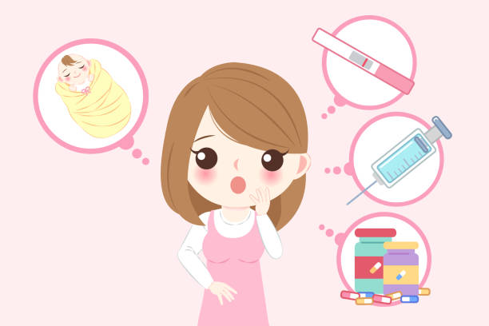
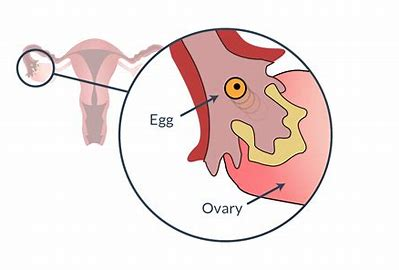

Services
Beginners Guide For Ovulation

What is ovulation and when it occurs?
- Ovulation: Ovary releases an egg (ovum).
- Egg travels down the fallopian tube for potential fertilization.
- Ovulation typically occurs about 14 days before the next menstrual period.
- Tracking your cycle with an app or calendar can aid in predicting ovulation.

Ovulation and Menstural cycle
- Ovulation process initiated by hypothalamus releasing GnRH.
- GnRH triggers pituitary gland to release FSH and LH.
- Days 6 to 14: FSH matures follicles in one ovary.
- Days 10 to 14: One follicle forms a fully mature egg.
- Around day 14: LH surge triggers ovary to release the egg (ovulation).
- Post-ovulation: Progesterone rises, preparing the uterus for potential pregnancy.

Fertility, Conception and Pregnancy
- Ovaries release one egg per month during ovulation.
- Fertile window: 5 days before ovulation to ovulation day.
- Sperm survives for 3-5 days in the body.
- Fertilized egg moves to the uterus.
- Implantation: Fertilized egg (blastocyst) attaches to uterine lining.
- Hormones signal pregnancy, keeping uterine lining intact.
- No period is the first sign of pregnancy.

Symptoms of Ovulation
- Tender breasts
- Bloating.
- Minor pelvic or abdominal pain.
- Light bleeding or spotting.
- Heightened sense of smell, taste or sight.